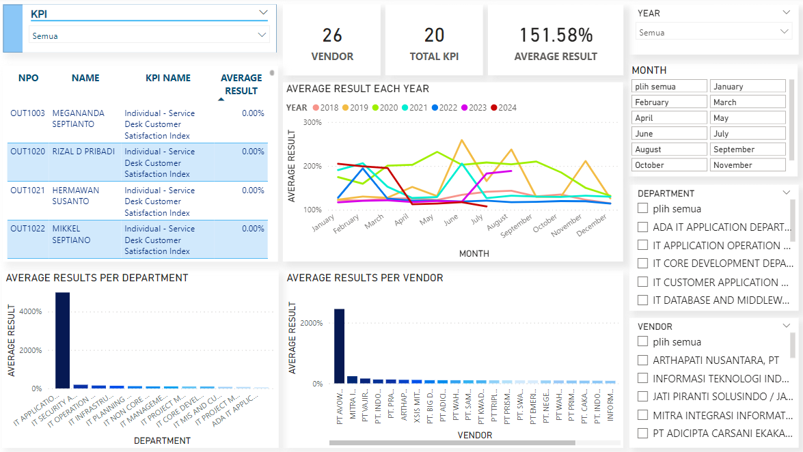
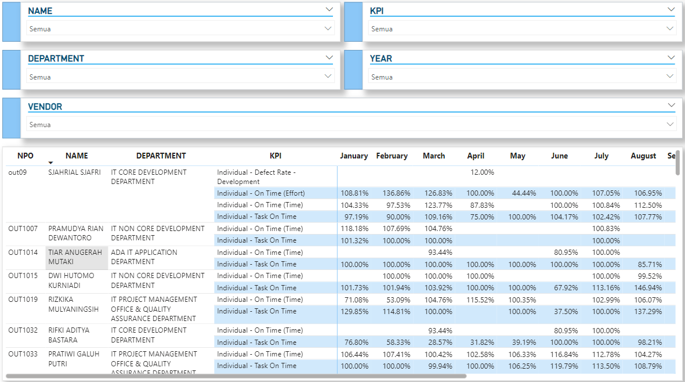
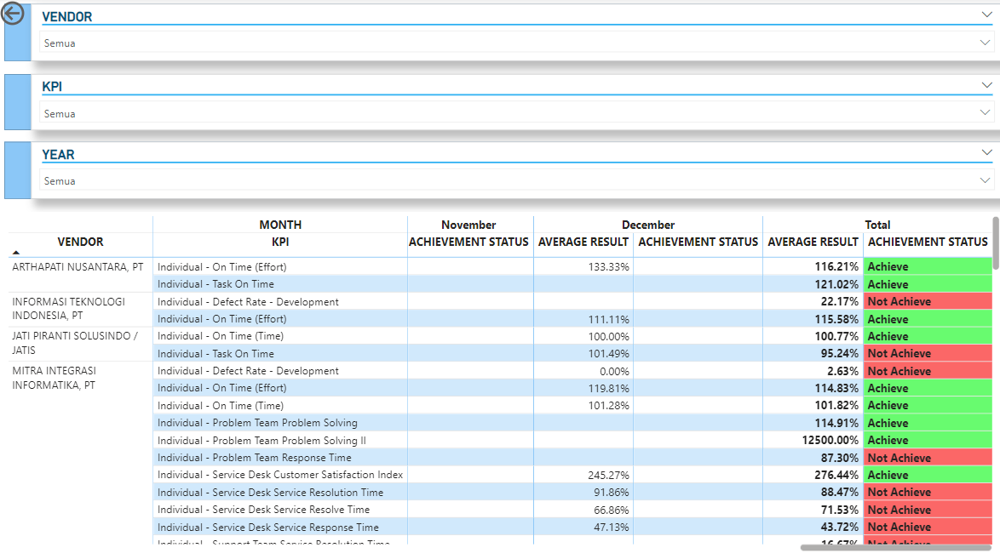

Dashboard Management Contract, Asset, PO/PR, Ticket, and KPI Vendor
A data-driven dashboard engineered using SQL, Power BI, and Excel to improve operational efficiency. It enhances data integrity in contract and asset management, streamlines ticket workflows, and provides strategic insights into vendor performance.
Documentation
-
Dashboard Management Contract, Asset, PO/PR, Ticket


-
Dashboard KPI Employee's Vendor
  